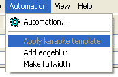

Welcome to the first tutorial in using Karaoke Templater to create karaoke effects. We'll start out with something simple and then continue on to more advanced effects throughout the series.
You can run Karaoke Templater in two different ways. For now we'll just concentrate on one of them.
Look under the Automation menu in Aegisub.

You should see the option called Apply karaoke template, though it will be unavailable. This is what you'll select to use the "templates" we'll be writing throughout these tutorials. Right now it's unavailable because you haven't entered any templates. We'll get to that in a moment.
If you don't have the Apply karaoke template option, your Aegisub installation is either incomplete or damaged. You need to repair your installation in that case, to be able to use Karaoke Templater.
But there is something else to make sure of first.
Karaoke Templater can do many things for you, but it can't guess the lyrics for your song, or how they're synchronised with the music. You'll have to time the lyrics yourself, or get someone else to do it. You can learn how to time karaoke at the Karaoke Timing Tutorial.
We'll call song lyrics with basic karaoke timing (\k timing), but no other special effects, for timed karaoke. When an effect has been applied to the karaoke we'll call it styled karaoke.
If you don't have any song to work with here are two lines from a song. You can select them in your browser, select Edit→Copy, then go to Aegisub and select Edit→Paste, to get them into Aegisub.
Dialogue: 0,0:00:01.85,0:00:09.06,Default,,0000,0000,0000,,{\k97}shi{\k41}ta{\k0} {\k20}no{\k10} {\k30}u{\k80}e{\k53} {\k23}a{\k21}ma{\k39}ku{\k7} {\k24}to{\k24}ke{\k31}ru{\k0} {\k37}wa{\k23}ta{\k92}gu{\k69}mo
Dialogue: 0,0:00:09.28,0:00:16.21,Default,,0000,0000,0000,,{\k79}ki{\k61}su{\k0} {\k9}o{\k0} {\k37}shi{\k98}te{\k40} {\k23}ku{\k25}ro{\k40}i{\k0} {\k28}tsu{\k19}ba{\k51}sa{\k0} {\k11}no{\k0} {\k34}shi{\k138}ta
Either way you have some karaoke timed lyrics now, so we can start.
You don't need to load any audio, but it can be a good idea to have some video open. If you don't have any video files ready you can use, select Video→Use dummy video and just say OK. It's not a very interesting video you will get, but it will show you how the subtitles and the effect we're creating will look.
Now we have everything else set up it's time to make the actual template. First, here's how to add it. The explanation of what every part means will follow.
template line" into it. (Without the quotes!) Press the Enter key on your keyboard to save the Effect field.{\r\t($start,$mid,\fscy120)\t($mid,$end,\fscy100)}Insert a screenshot of how it should look after the steps.
Now look at the Automation menu again. If you made the template line correctly, Apply karaoke template will now be available. If it isn't review the steps above again.
Select Apply karaoke templates and watch Karaoke Templater do its work.
Another screenshot, this time after applying templates.
If you have a video open you can view the effect right now, inside Aegisub.
Also notice how the template line was left in place, and the timed karaoke was changed to comment lines and had karaoke filled into their Effect fields. Karaoke Templater preserves your timed karaoke in the styled karaoke so you won't lose it. But it also has another function…
Continuing right on from above, now try doing this:
{\r\k$kdur\t($start,$end,\1c&H00FF00&)\t($start,$mid,\fscy120)\t($mid,$end,\fscy100)}More screenshot
Karaoke Templater re-used the commented out timed karaoke and changed the styled karaoke to match the new effect instead. You can also try changing the commented out timed karaoke and apply templates again.
Like this, you can work gradually on your effect and preview it as you go.
To finish off this first part of the tutorial, here's what each part means. This is not the full explanation of everything, but it should be plenty for now.
template.line.template line text in the Effect field means this is a
template line of line class.fx in the Effect
field. This is used as a reminder for Karaoke Templater that this line
should be replaced, if templates are applied once again.$start, $end, $mid and $kdur.
Variables are replaced with the information they store for every syllable
that's replaced.
$start gets replaced with the start time of the syllable. This is
in milliseconds from the start of the line, ie. a time code suitable
for putting into the \t, \move and \fade tags.$end is the end time of the syllable, also in
milliseconds.$mid, this is the midway time of the
syllable, the time right in the middle of $start and $end. Here, we
used it to grow each syllable taller the first half of its duration,
and back to normal height for the second half. Also in milliseconds.$kdur variable, however is in centiseconds. This is the
original time from the \k tag, and is almost only useful for putting
back into a \k tag, like we did here.With this knowledge, you should already be able to create lots of effects. You may also want to refer to the page on ASS override tags.
You can also continue to the next tutorial, where we'll look at how to do math with variables to get more variation.